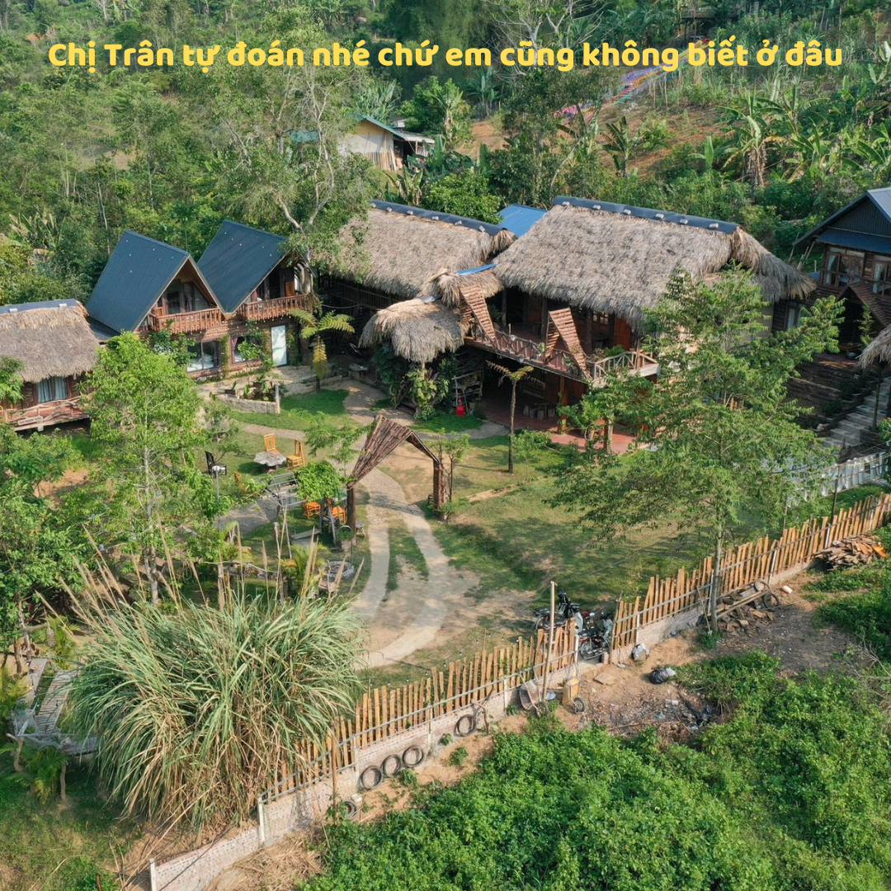
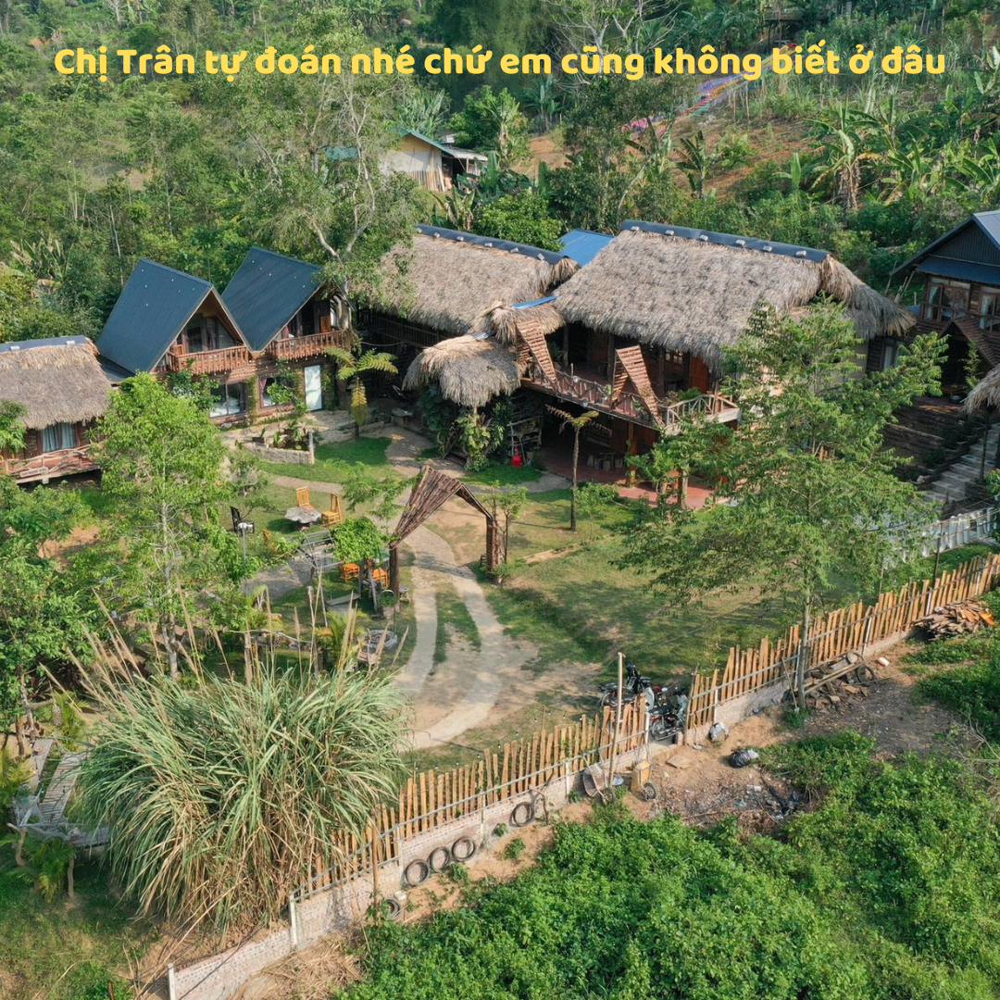

Toàn quyền Đông Dương ra Nghị định tách một phần đất thuộc tỉnh Thái Nguyên thành lập tỉnh Bắc Kạn.
1935–1939
Sau thời kì khó khăn, trên cơ sở phong trào cách mạng trong toàn quốc dần hồi phục và phát triển, các cuộc đấu tranh hợp pháp của dân Bắc Kạn lần lượt diễn ra
24/8/1949
Tỉnh Bắc Kạn được giải phóng trong cuộc kháng chiến chống Pháp
21/4/1965
Ủy ban Thường vụ Quốc hội phê chuẩn việc hợp nhất hai tỉnh Bắc Kạn và Thái Nguyên thành tỉnh Bắc Thái
06/11/1996
Quốc hội (khóa IX) ra Nghị quyết chia tỉnh Bắc Thái để tái lập tỉnh Bắc Kạn và tỉnh Thái Nguyên. Đồng thời, chuyển 2 huyện Ngân Sơn, Ba Bể của tỉnh Cao Bằng trở về tỉnh Bắc Kạn
 
